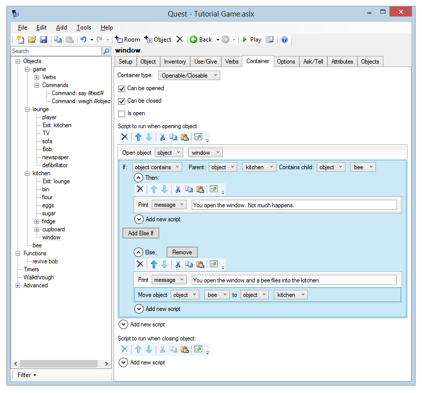

Moving objects during the game
As your game unfolds and the player interacts with your world, you may want to bring additional objects into play, or remove others. In this example, we’ll add a window to the kitchen. When the player opens it, a bee flies in. In the next section we’ll make this bee quite irritating.
Creating a Hidden Object
First, let’s create the “bee” object. We don’t want this object to appear anywhere when the game starts, so create it outside of a room. If using the desktop version, you can set the parent to “none” when you add the new object, but it may be better to create a special room, perhaps called “nowhere” or “limbo” or “offstage”, and keep all your hidden objects there. Give the bee a suitable description.
Bringing the Object into Play
Now, add a window object to the kitchen and give it a sensible description. We want to make this window openable, but it’s not a container, as you can’t put things in a window. We can’t add “open” as a verb though, because the “open” command is handled by Quest’s container logic. The solution is to go to the Container tab (via the Features tab, of course) and select “Openable/Closable” from the Container Type list. This provides basic functionality for opening and closing an object, but it doesn’t do anything else.
Choose “Openable/Closable”, and now add script commands to the “Script to run when opening object”:
- Open object: window
- Print a message: “You open the window and a bee flies into the kitchen.”
- Move object “bee” to “kitchen”
For the close script, you just need to add:
- Print a message: “You close the window.”
- Close object: window
Launch the game and go to the kitchen. Open the window and verify that you can now look at the bee.
Checking if the Object is Already There
What if the player closes the window and then opens it again? They’ll be told that the bee has flown in again, which doesn’t make sense as it is already there.
One way to get around this might be to use an object flag, as we’ve done before. However it’s even simpler just to check if the bee is in the kitchen. Add an “if” command and choose “object contains”. Now you can select “kitchen” as the parent and “bee” as the child.
For the “then” script, print a message such as “You open the window. Not much happens.”
Now cut and paste the existing “print a message” (“a bee flies in…”) and “move object” to the “Else”.

Removing an Object during Play
As well as bringing an object into play, you can also remove an object from play using the “Remove object” command from the Objects category. This will set the object’s parent to “null”, so you can always bring it back into play again later. To destroy an object entirely, use the “Destroy an object” command - the object will be completely removed from the game. It is more efficient to simply remove the object from play though - it is less work for Quest to simply unset the object’s parent than it is to remove all the object’s attributes and destroy it - so it is recommended that you use “remove” in preference to “destroy”.
As an exercise, add an “apple” object, with a sensible description. Add an “eat” verb to the object which will print a message saying “You eat the apple. Tasty.” and then remove the apple from play (though it is worth noting that items can be set to be edible via the Edible tab).